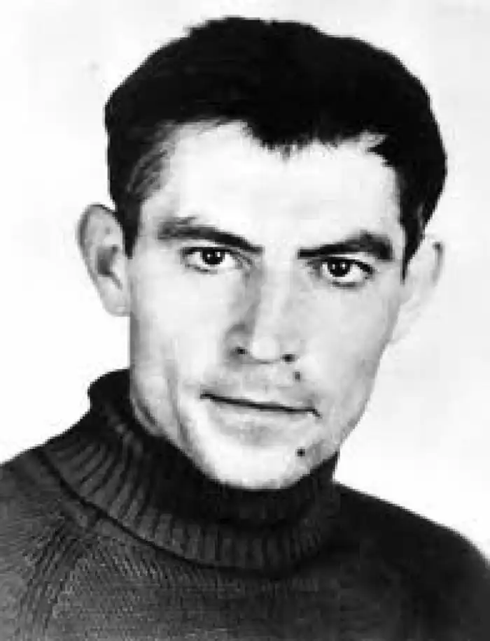
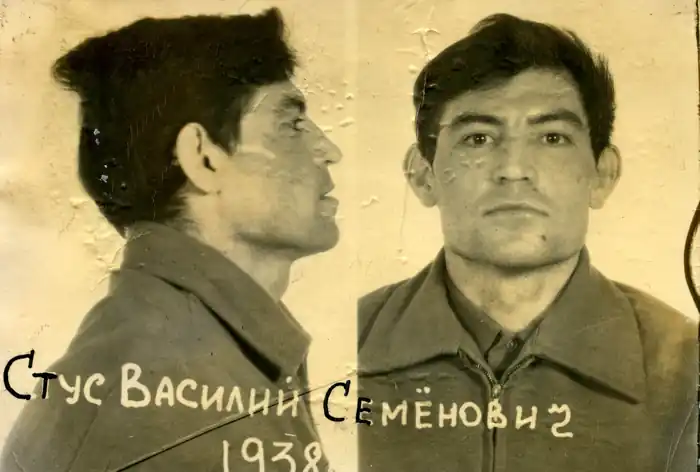
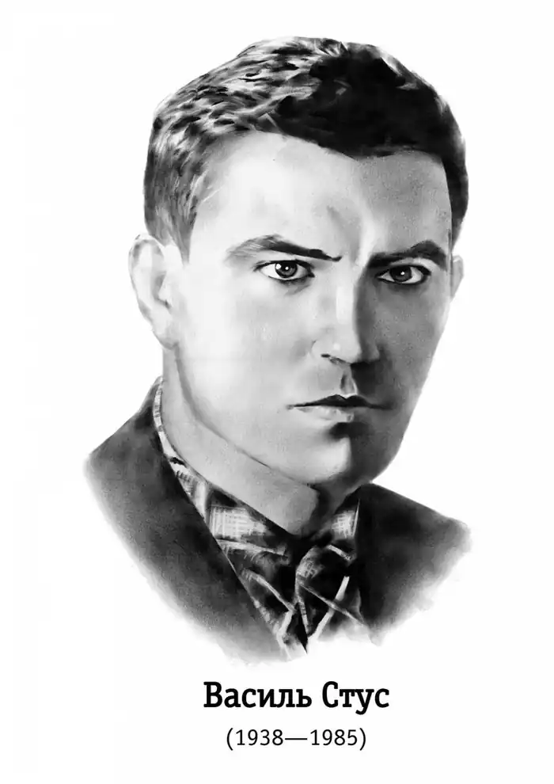
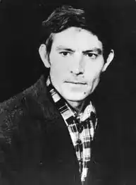
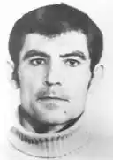
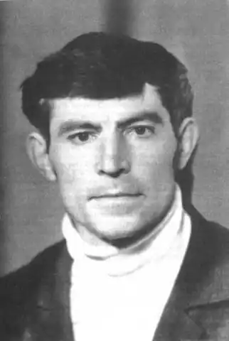

ВАСИЛЬ СЕМЕНОВИЧ СТУС
6.1.1938 — 4.9.1985
Поетична спадщина видатного українського поета Василя Стуса закономірно увійшла в український літературний процес. Його поетичне слово "позначене своєрідним сплавом інтелектуалізму з ліризмом, медитативністю, оригінальним філософським осмисленням буття, нелегким для розуміння, тим паче, що поет часто відходить від усталених канонів образотворення, сміливо формує слова й поняття так, що звична логіка сприйняття художнього твору часом заважає осягнути складність його образів, здебільшого метафоричних" [1, с.32]. Минуле десятиріччя подарувало читачам і дослідникам найповніше видання творів В.Стуса у чотирьох томах, шести книгах. Літературознавство і методика літератури збагатилися розвідками про життєвий і творчий шлях письменника. Вірші, що уведені до шкільного курсу літератури, не можуть, звичайно, всебічно представити художній світ В. Стуса, залишаючи цим самим можливості вчителям розширювати діапазон знайомства учнів з письменником різними засобами шкільної літературної освіти. Для донеччан стає предметом особливої уваги донецький період життєвого шляху поета-земляка, мотиви, картини та образи рідного краю, що зустрічаються у віршах лірика. І це є закономірним, оскільки дитинство і юність майбутнього письменника прямо й опосередковано впливали на формування його світогляду, а тому і на його мистецькі уподобання. Крім того, образи і картини Донеччини у творах В.Стуса, такі ж близькі учнівській і студентській молоді, як і поету-земляку. Цей останній факт за відповідних навчальних умов може мати додатковий потужний вплив на пізнавальні рефлексії та бути доповнюючим стимулом в опануванні його ускладненого філософською напругою слова. Розглядаючи твори В.Стуса у цьому життєво близькому школярам аспекті, потрібно звернутись до паралелей між творами відомих українських поетів, які писали про Донеччину (М. Чернявський, С. Черкасенко, В. Сосюра та ін.), і віршами В.Стуса та з'ясувати з учнями відмінність його нетрадиційного слова, стиль його мислення. Як відомо , Василь Стус народився на Різдво Христове 6.1.1938 р. в селі Рахнівка на Вінниччині, але невдовзі батьки переїздять з дітьми на Донбас, в Сталіно (тепер Донецьк). На шостому році життя Василя віддали до школи. Протягом 1954-1959 років навчався в Донецькому педагогічному інституті на філологічному факультеті, після закінчення якого, відпрацювавши два місяці вчителем на Кіровоградщині, служив в армії (1959-1961). Після служби спробував вчительського хліба в школах Горлівки (1961-1963), працював літредактором у газеті "Социалистический Донбасс". В 1963-1965 роках навчався в аспірантурі Інституту літератури в Києві, але був увільнений за участь у несанкціонованих літературних вечорах та за виступи на захист заарештованих у 1965 році "шістдесятників", зокрема земляка Івана Світличного. Після звільнення доводилось Василю працювати не за фахом: кочегаром, на метробуді, навіть інженером. Щодо початків літературної творчості, то слід пам'ятати: вперше твори В.Стуса було надруковано у грудні 1959 року в "Літературній Україні" з передмовою до них видатного українського поета Андрія Малишка. Сьогодні вже накопичено значний історико-літературний матеріал про дитинство і юність поета-земляка у вигляді спогадів друзів та однокурсників, близьких до поета людей. Головне ж, звичайно, для дослідників його дитинства і юності —це твори письменника і листи до рідних і друзів та знайомих, вміщені у зібранні його творів у чотирьох томах, дев'яти книгах. Важливими у накресленій справі дослідження життєвого шляху можуть стати спогади спогади товариша студентських років, поета Володимира Міщенка, про діалектологічну практику студентів педінституту, серед яких був і він і В.Стус. Практика відбувалася у селах біля славетної Савур-Могили, свідка подій давноминулих епох, оспіваної в українському народному епосі , натхненниці поетичних сюжетів не одного донецького письменника. В.Міщенко згадував про те далеке студентське літо : "На початку липня 1957 р. ми вирушили в діалектологічну експедицію до Савур-Могили. Викладач діалектології Ф. І. Горчевич поставив перед нами завдання: записати легенди та перекази; скласти атлас говірок довколишніх сіл. З Донецька виїхали автобусом. Настрій був піднесений, ми почувалися мандрівниками в незнані світи. Ще з шкільної лави кожен з нас пам'ятав "Думу про втечу трьох братів з Азова". Звернувши з траси, попрямували до могили, що вивищувалась над степом. Подолали кілометрів зо два. Спека посилювалася. Пахло чебрецем і полином, довкола буяли трави, стояла глибока тиша, яку порушував лише віддалений шум автобусів та машин. Ми звернули увагу на те, що йдемо-йдемо, а могила не наближається—все бовваніє десь у степовому мареві…Тільки надвечір дісталися вершини. зупинилися, озираючись довкола,—перед нами лежали неозорі донецькі степи, а посеред них—оази дерев, села, хутори, далека курява польових доріг…" [2]. Чи не з цієї Василевої подорожі виростає у майбутніх його творах незабутній образ донецького степу, який у північній трагічній віддаленості поета стає образом-символом не тільки рідного краю, але й усієї України?! Доповнять факти із життєвого шляху поета свідчення книжка спогадів, упорядкованої однокурсником поета по Донецькому педагогічному інституті, відомим поетом, — Олегом Орачем "Не відлюбив свою тривогу ранню. Василь Стус поет і людина. Спогади, статті, листи, поезії"(К., 1993). Донецький період життя В. Стуса тут представлено у спогадах сестри поета Марії Стус, однокурсників поета В. Захарченка, А. Лазоренка, Олега Орача, члена донецького обласного поетичного об'єднання 60-х років Й. Курлата та ін. Цікаві роздуми про Донбас—як землю, що породила у минулому столітті незламних і всесвітньо відомих борців за права людини, за рідне слово—подаються у брошурі сина поета "Життя і творчість Василя Стуса" (К., 1992). Молодий літературознавець розмірковує над суспільними причинами, що дали Україні славетну чергу видатних борців за її волю і незалежність і створили умови для розвитку таланту Василя Стуса. Дивним тут видається те, що у другій половині ХХ ст. звитяжців боротьби за права рідного народу дав Україні вщент зрусифікований Донбас. Дмитро Стус пише: "Десь непоміченим і невідзначеним досі полишається той факт, що Донбас, котрий україномовний загал і сьогодні вважає теренами з вихолощеним українським духом, виявив сей дух постатями і Івана Світличного, і Івана Дзюби, і Олекси Тихого, і Василя Голобородька, і Василя Захарченка, і, врешті, Василя Стуса. Хай не всім стачило вміння тримати удар, але без вродженої аристократичності зумів вистояти у боротьбі зі всіма силами зла одразу." [3, с.36]. Після ознайомлення з цими словами , варто замислитись школярам і вчителю про причини народження саме на спролетаризованій і зрусифікованій землі названих у брошурі Д.Стуса видатних українців: як це могло трапитись, які життєві причини цього явища? Щоб уявлення про творчий портрет В.Стуса стали для читачів ще глибшими, необхідно звернутись до життєвої долі наших видатних земляків Івана Дзюби, Івана Світличного, Олекси Тихого, Василя Захарченка та Василя Голобородька. Своїм стоїцизмом і правдивим словом вони наближали незалежність і свободу України, збагачували і збагачують літературний процес в Україні. Для поглиблення уявлень школярів про життєвий шлях письменника було б бажаним зібрати матеріали про достатньо відомих сьогодні друзів та товаришів поета ,зокрема про В. Міщенка, В.Дідківського та інших. Цікавою пізнавальною сторінкою для донеччан (та й для усіх дослідників) може стати подорож до картин монументальної мозаїки, виконаної бригадою київських митців на чолі з відомим художником Григорієм Синицею у місті Донецьку у 1966 році [4] До бригади входили друзі Василя Стуса Віктор Зарицький і Алла Горська. Вони виконали в мозаїці оформлення середніх шкіл №5 ("Прометей" та ін.) та №47 ("Спортивні дитячі ігри"), а також живописне панно у ювелірній крамниці ("Жар птиця") у центрі Донецька. Під час виконання цих робіт на мистецькі виробничі майданчики приходив до своїх друзів Василь Стус, спілкувався з ними. Ці мозаїчні картини, за винятком школи № 47, залишаються неушкодженими і придатними для спостереження і сьогодні. Василь Стус присвятив Аллі Горській кілька своїх поетичних творів: "Заходить чорне сонце дня…", "Ярій, душе! Ярій, а не ридай…", "Триптих для Алли Горської "("Вигнання", "Смерть", "Безсмертя"). Своїми натхненниками поет називає поетів Гете, Свідзинського, Рільке, Унгаретті, Квазімодо, і прозаїків—Толстого, Стефаника, Хемінгуея, Пруста, Камю, Фолкнера, Маркеса та ін. Разом з тим поет свідомо розумів, що у поезії необхідно "добре бутися завжди самим собою" [5, с.37]. Його стиль мислення і фарби поетичного слова були притаманними тільки йому одному. Так, зокрема, картини та образи рідного краю—Донбасу у віршах В.Стуса позначені тільки йому притаманними якостями поетичних відчуттів і художніх узагальнень. Поетові чужа сентиментальність і розслабленість. Письменник втілював у традиційній в цілому формі одвічну проблему взаємин поета з дійсністю, поета і читача. Віршам Василя Стуса близька філософія екзистенціалізму, а передусім ідея "трагічного стоїцизму" , яку розробляли в українській літературі видатні попередники поета — Леся Українка, Олег Ольжич, Олена Теліга. Ось характерні для Стуса роздуми про власну трагічну, але не відворотну долю: Як добре те, що смерті не боюсь я і не питаю, чи тяжкий мій хрест, що перед вами, судді, не клонюся в передчутті недовідомих верст, що жив, любив і не набрався скверни, ненависті, прокльону, каяття. Народе мій, до тебе я ще верну, як в смерті обернуся до життя своїм стражденним і незлим обличчям. Як син, тобі доземно уклонюсь і чесно гляну в чесні твої вічі і в смерть із рідним краєм поріднюсь. ("Як добре те, що смерті не боюсь я...")У багатьох віршах В.Стуса можна помітити образи і картини рідної йому Донеччини. Ця близька поету з раннього дитинства дійсність також сприймається "стражденним і незлим обличчям": ми тут не побачимо традиційно відзначуваної попередниками поета степової краси , величі промислового та житлового будівництва і взагалі будь-якої замилуваності.